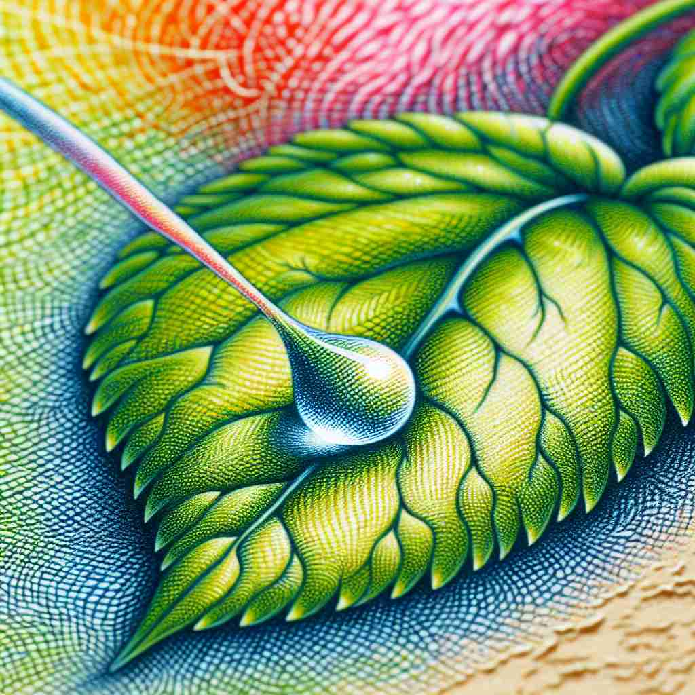

💬 She wants to capture a moment of the sunset with her camera.

💬 We need to capture the moment before it's gone.
💬 She likes to enjoy the moment with her coffee.

💬 The water droplet sits on the leaf for a moment before falling.
🔈 ['məʊm(ə)nt]
🗝️ n. a very short period of time
🖼️ 在一个戏剧紧张的篮球比赛中，一位球员迅速投出一个三分球。球在空中划出一个完美的弧线，仅用了一瞬间便进入篮筐，全场观众都为这短短的‘瞬间’欢呼。
🔍 想象'moment'是一个快速闪过的瞬间。这个核心概念贯穿了所有含义：从字面上的短暂时间，到特定时间点，再到重要性（因为重要事件往往发生在关键时刻），甚至延伸到物理学中描述旋转的瞬时状态。记住这个'闪现'的概念，可以帮助你更好地理解和记忆'moment'的各种用法。
💬 She wants to capture a moment of the sunset with her camera.
💬 We need to capture the moment before it's gone.
💬 She likes to enjoy the moment with her coffee.
💬 The water droplet sits on the leaf for a moment before falling.
🌳 该词来源于拉丁词 'momentum'，意为 '运动、动量'。词根 'mom' 可以与运动或瞬间相关联，后缀 '-ent' 用于形成名词。
💡 可以将 'moment' 联想为 'move' 的过程中的一个点，即某个 '瞬间'。通过将 '运动' 和 '瞬时' 联系起来，容易理解为短暂的一刻。
🗝️ n. a specific point in time
🖼️ 在一个盛大的婚礼上，当新郎和新娘彼此凝视，准备说出‘我愿意’时，那一刻被所有亲友铭记，这个特定的‘时刻’象征着他们共同生活的开始。
💬 The moment I saw her, I knew she was the one.
❓ 从短暂时间延伸到特定时间点
🗝️ n. importance or significance
🖼️ 在一个国际会议上，一位科学家发表了他的最新研究成果，全世界的专家都在认真倾听。每个人都意识到，这一‘时刻’具有重要的科学意义，将会对未来的研究产生深远影响。
💬 This is a moment of great historical importance.
❓ 重要的事情常发生在关键时刻
🗝️ n. the present time
🖼️ 在一个安静的图书馆中，学生们埋头苦读，专注于手中的书本，对于他们而言，‘此刻’就是全神贯注于知识的时光。
💬 Let's focus on the moment and not worry about the future.
❓ 当下即是一个短暂的时刻
🗝️ n. a tendency to rotate about an axis
🖼️ 在一个物理实验室里，学生们正在进行力学实验。当他们施加一个力矩在轮子上时，轮子开始绕轴旋转，这展示了‘力矩’（moment）对转动趋势的影响。
💬 The moment of inertia affects how quickly an object can rotate.
❓ 物理学中描述旋转的瞬时状态
🗝️ phrase for the moment
🖼️ 在一个温馨的家庭晚餐中，父母和孩子们围坐在餐桌旁。妈妈微笑着对孩子们说：‘我们就先享用这些菜，暂时不要考虑其他的’——‘此时此刻’，享受的是家庭的温馨和美食。
💬 We're staying here for the moment, but we might move soon.
❓ 强调当前这个短暂的时间段